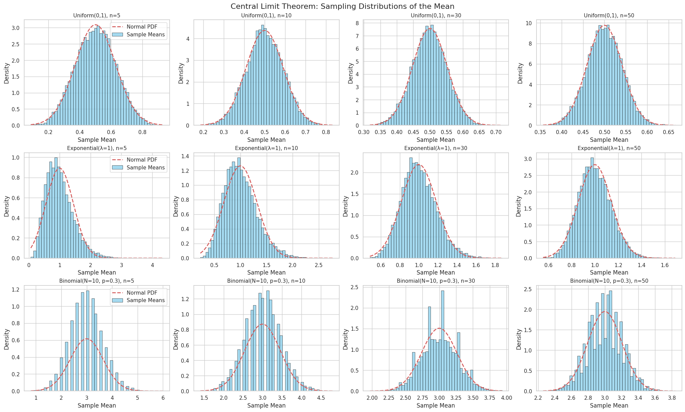
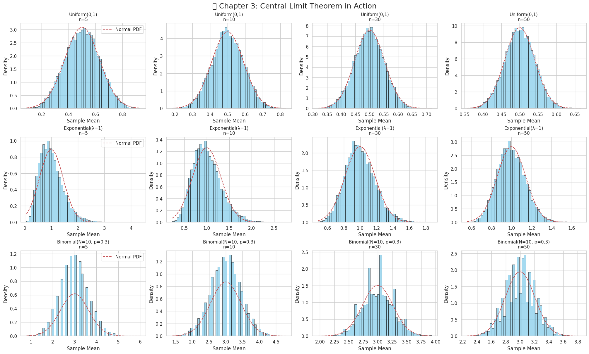
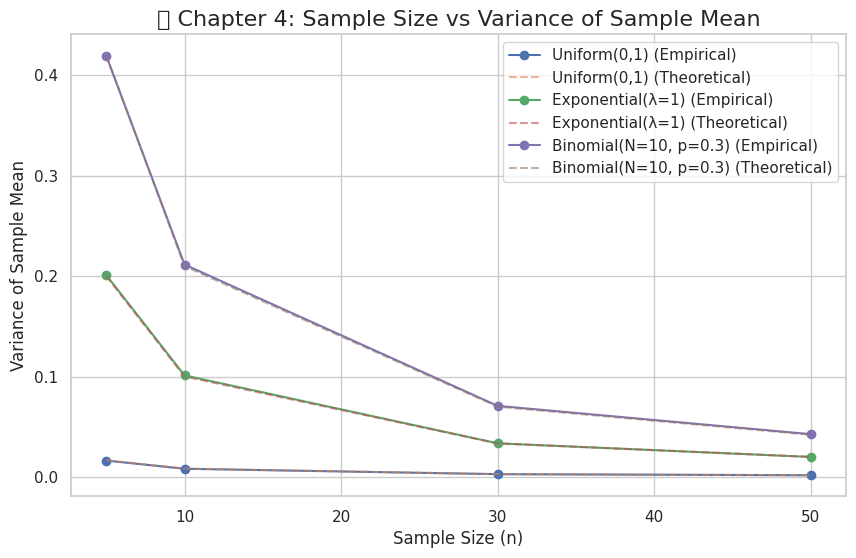

q# Problem 1
Exploring the Central Limit Theorem through Simulation
Project objective: Build intuitive understanding of the Central Limit Theorem (CLT) by simulating sampling distributions of the sample mean for several population distributions.
1 Mathematical Background
- Population mean:
\(\(\mu=\mathbb{E}[X]\)\) - Sample mean (for a sample of size \(n\)):
\(\(\bar{X}_n=\frac{1}{n}\sum_{i=1}^{n}X_i\)\) - Central Limit Theorem (one-dimensional form):
\(\(\boxed{\sqrt{n}\,\frac{\bar{X}_n-\mu}{\sigma}\;\xrightarrow{\;d\;}\;\mathcal{N}(0,1)}\)\)
where \(\sigma^2=\operatorname{Var}(X)\) and \(\xrightarrow{\;d\;}\) denotes convergence in distribution.
Regardless of the parent distribution, the standardized sample mean approaches the standard normal distribution as \(n\to\infty\).
2 Project Road-Map
- Set up population distributions
• Uniform(\(a,b\))
• Exponential(\(\lambda\))
• Binomial(\(N,p\))
Generate a large synthetic population for each. - Sampling & sample-mean computation
• Pick sample sizes \(n\in\{5,10,30,50\}\).
• For each distribution & \(n\):
– Draw \(M\) independent samples (e.g. \(M=10,000\)).
– Compute \(\bar{X}_n\) for every draw.
– Store the vector of means → sampling distribution. - (Next) Visualisation & diagnostics (placeholder)
• Histograms & KDEs of sampling distributions.
• Normal Q–Q plots & Shapiro–Wilk tests.
3 Python Implementation

# 📦 Imports
import numpy as np
import pandas as pd
import matplotlib.pyplot as plt
import seaborn as sns
from scipy.stats import norm
# 🎲 Reproducibility
rng = np.random.default_rng(seed=42)
# 🔧 Simulation parameters
POP_SIZE = 1_000_000
M = 10_000
SAMPLE_SIZES = [5, 10, 30, 50]
# 📊 Create populations
a, b = 0, 1
pop_uniform = rng.uniform(a, b, POP_SIZE)
lambd = 1.0
pop_expon = rng.exponential(1 / lambd, POP_SIZE)
N, p = 10, 0.3
pop_binom = rng.binomial(N, p, POP_SIZE)
populations = {
'Uniform(0,1)': pop_uniform,
'Exponential(λ=1)': pop_expon,
'Binomial(N=10, p=0.3)': pop_binom,
}
# 🧮 Helper to draw sample means
def sample_means(pop, n, m=M):
idx = rng.integers(0, len(pop), size=m * n)
samples = pop[idx].reshape(m, n)
return samples.mean(axis=1)
# 📦 Generate sampling distributions
sampling_distributions = {}
for name, pop in populations.items():
sampling_distributions[name] = {}
for n in SAMPLE_SIZES:
sampling_distributions[name][n] = sample_means(pop, n)
# 📊 Plotting function
def plot_sampling_distributions(sampling_distributions, populations):
sns.set(style='whitegrid', palette='muted')
fig, axs = plt.subplots(
nrows=3, ncols=4, figsize=(20, 12), constrained_layout=True
)
for row_idx, (dist_name, n_dict) in enumerate(sampling_distributions.items()):
pop_data = populations[dist_name]
mu = np.mean(pop_data)
sigma = np.std(pop_data)
for col_idx, n in enumerate(SAMPLE_SIZES):
ax = axs[row_idx, col_idx]
sample_means = n_dict[n]
sns.histplot(sample_means, bins=50, stat='density', kde=False, ax=ax, color='skyblue', edgecolor='black', label='Sample Means')
# Overlay Normal distribution
x = np.linspace(sample_means.min(), sample_means.max(), 200)
pdf = norm.pdf(x, loc=mu, scale=sigma / np.sqrt(n))
ax.plot(x, pdf, 'r--', lw=2, label='Normal PDF')
ax.set_title(f'{dist_name}, n={n}', fontsize=11)
ax.set_xlabel('Sample Mean')
ax.set_ylabel('Density')
if col_idx == 0:
ax.legend()
fig.suptitle('Central Limit Theorem: Sampling Distributions of the Mean', fontsize=16)
plt.show()
# 🔍 Display visualisation
plot_sampling_distributions(sampling_distributions, populations)
4 Next Steps
- Visualise each
meansarray with histograms & overlay a normal PDF. - Standardise the sample means:
\(\(Z=\sqrt{n}\,\frac{\bar{X}_n-\mu}{\sigma}\)\)
Plot their distribution and compare to \(\mathcal{N}(0,1)\). - Formal tests: Kolmogorov–Smirnov or Anderson–Darling goodness-of-fit.
Feel free to extend or refactor the code – this notebook is meant as a clean, well-commented starting point.
Citation reminder: If you use these materials in an academic context, please credit the author(s) appropriately.
📊 Visualizing and Understanding the Central Limit Theorem (CLT)
🎯 Objective
Explore how sampling distributions evolve as sample size increases, and reflect on the broader importance of the Central Limit Theorem (CLT) in statistics and real-world applications.
🔍 4. Visualize Sampling Distributions


📌 Goal:
To observe how sample means behave when drawn from different population distributions with varying sample sizes.
📈 Approach:
- For each population distribution:
- Uniform(0, 1)
- Exponential(λ = 1)
-
Binomial(N = 10, p = 0.3)
-
For each sample size \(n \in \{5, 10, 30, 50\}\):
- Draw \(M = 10{,}000\) random samples
- Compute the sample mean \(\bar{X}_n\)
- Plot a histogram of the resulting sample means
🧠 Observation Focus:
- Does the shape of the sampling distribution look approximately normal?
- How does the shape change as \(n\) increases?
📐 Theoretical Foundation:
Let \(X_1, X_2, \dots, X_n\) be i.i.d. random variables from a population with: - Mean \(\mu\) - Variance \(\sigma^2\)
Then the sample mean is:
According to the Central Limit Theorem:
As \(n \to \infty\), the sampling distribution of \(\bar{X}_n\) approaches a normal distribution \(\mathcal{N}(\mu, \sigma^2/n)\).
🔬 5. Analyze and Explore Parameters
❓ Questions to Investigate:
- How quickly do the sampling distributions become approximately normal for each population?
- How does sample size influence the spread and shape of the distribution?
- What is the role of population variance \(\sigma^2\) on the width of the sampling distribution?
📏 Key Relationships:
- Spread of the sampling distribution:
So, larger \(n\) leads to narrower (more concentrated) distributions of \(\bar{X}_n\).
- Skewness and Convergence:
- Highly skewed populations (like Exponential) require larger \(n\) to exhibit normality in \(\bar{X}_n\)
- Symmetric distributions (like Uniform) converge to normal shape more quickly
🌍 6. Reflect on Real-World Applications
The Central Limit Theorem is essential in many fields:
🧪 1. Estimating Unknown Parameters
- Enables confidence intervals and hypothesis tests using sample statistics
- Even if population is non-normal, \(\bar{X}_n\) is approximately normal for large \(n\)
🏭 2. Manufacturing Quality Control
- Sampling the number of defective products from a batch
- Use sample means to detect deviations from target quality
💹 3. Financial Modeling
- Average returns over time intervals
- Risk assessment using aggregated asset behavior
📚 Conclusion: The CLT provides a powerful theoretical foundation that justifies using normal models in real-world data analysis. It assures us that sample averages behave predictably even when individual data points do not.